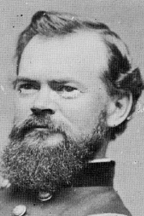

|

|

|
|
|
James Birdseye McPherson was born on November 14, 1828, in
Sandusky county, Ohio. Following his father's death in 1841,
James left home to work for a merchant in a neighboring
community. With his employer's encouragement, he attended
Norwalk (Ohio) Academy and then the U.S. Military Academy,
from which he graduated in 1853, at the head of his class.
McPherson then taught for one year at West Point, followed
by service as a military engineer in New York City and San
Francisco. Saddened by the worsening sectional conflict, he
held the abolitionists and Southern "fire-eaters" largely
responsible. His political conservatism was noticeable in
1856, when he supported Millard Fillmore, the American party
candidate, and in 1860, when he favored John Bell and the
Constitutional Union ticket.
After the attack on Fort Sumter, McPherson returned to
the East as a captain of engineers. Eager for duty in the
field, and for an opportunity for promotion, he appealed to
Henry W. Halleck, commanding the Department of the West, who
appointed him lieutenant colonel of engineers on Ulysses S.
Grant's staff. A collateral duty may have been to report on
Grant's "bad habits." His service at Forts Henry and
Donelson and at Shiloh won McPherson command of the
Seventeenth Corps during the Vicksburg campaign. In the
Atlanta campaign, he commanded the Army of the Tennessee.
That McPherson possessed outstanding personal qualities
is not disputed; opinions vary as to his military ability.
He was an excellent staff officer and subordinate commander,
as is evidenced by his record at the division and corps
levels. William T. Sherman chided him for being overly
cautious at Resaca (May 1864) but continued to give him
great responsibility throughout the advance on Atlanta. His
intelligent deployment of his army at Atlanta very likely
averted a disaster for Union arms. On July 22, 1864,
McPherson died of wounds received in the early stages of
John Bell Hood's attack on the Union left, making him the
highest ranking Union officer to die during the Civil War.
His death at age thirty-five, near Atlanta, left unanswered
the question of his potential.
Source: John T. Hubbell and James W. Geary,
Biographical Dictionary of the Union: Northern Leaders of
the Civil War (Westport, CT: Greenwood Publishing, 1995), 337.
|